DIY AUDIO PROJECTS | Julio Zúñiga
RECENT PROJECTS
Arduino+MaxMSP-controlled MIDI/Servo interface
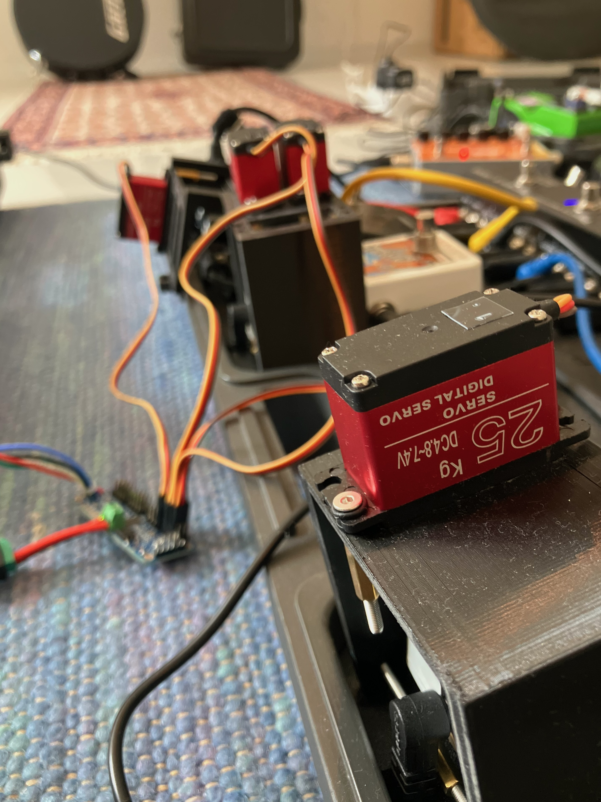
6/2025:
one of the things i've wanted to do for a long time is to be able to control the knobs on my analog guitar pedals interactively via MIDI, so i built this MIDI-servo interface from scratch
for this i'm using an Arduino Mega, an Adafruit 16-channel Servo driver to drive servo motors, MaxMSP, and 3D printing to build chassis that would let me fix the motors to the pedals
what follows is a breakdown of the build steps, with pictures and code...
first i needed a hub that would take in several expression pedals and several sustain pedals; i settled on making one that could house 4 exp and 4 sus
i found the individual jacks and a metal box to host the jacks, and i started wiring the TRS and TS ends to my Arduino:
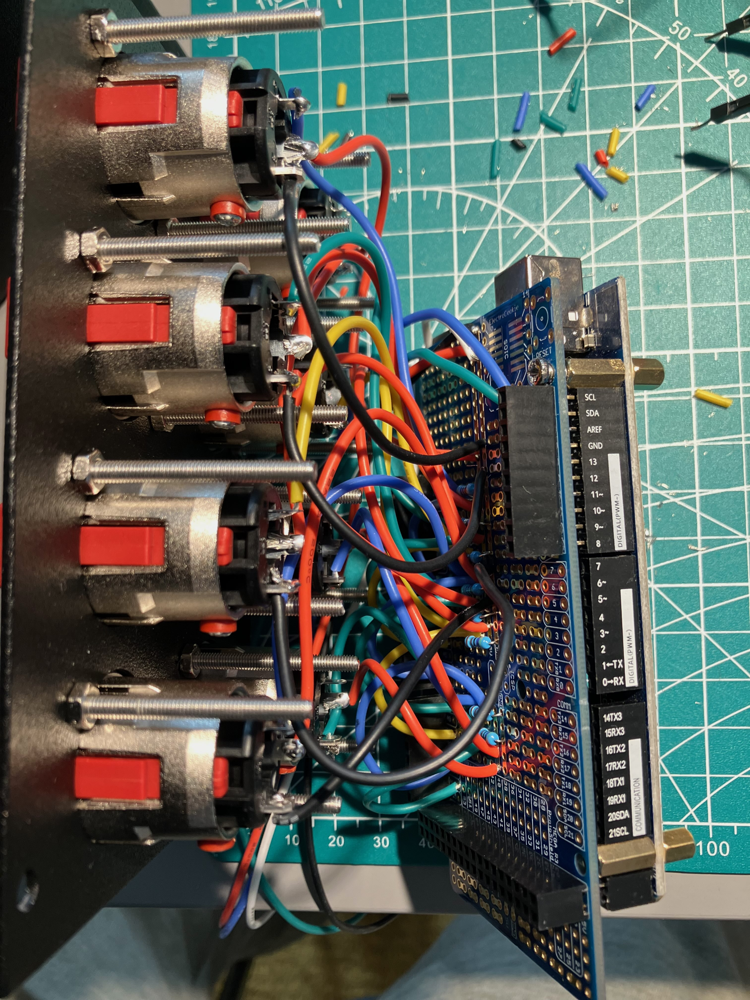
TRS/TS wiring to Arduino
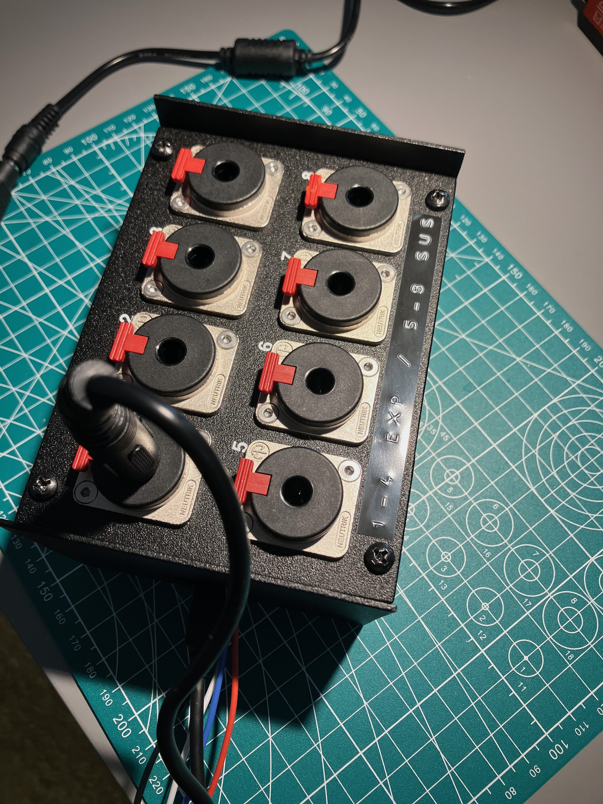
finished pedal hub with the Arduino Mega **conveniently** inside
and here is a circuit diagram with TRS/TS wired as inputs on the Arduino Mega (bottom half) and the output to the servo motors (upper half):
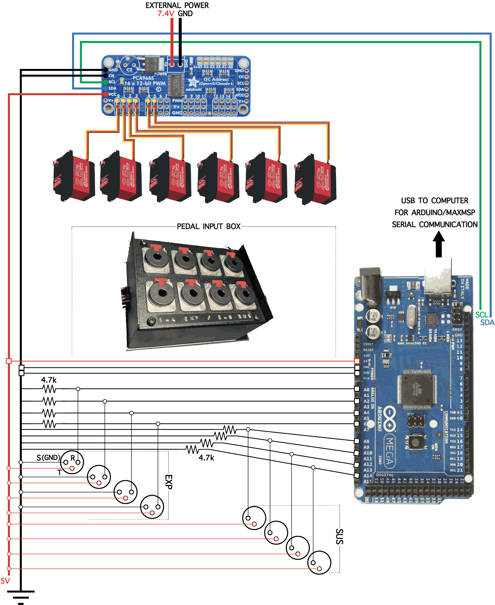
finished pedal hub
next, the Arduino code reading the input from the exp and sus pedals from the hub, which is then routed to its serial output (to be read by Max); Arduino then waits for incoming data from Max...
#include
#include
Adafruit_PWMServoDriver pwm = Adafruit_PWMServoDriver();
#define SERVOMIN 100 // 100min 600max ±0º to ±270º @50Hz on DS3225's
#define SERVOMAX 600
#define SERVO_FREQ 50
uint8_t servos[8] = {0, 1, 2, 3, 4, 5, 6, 7}; // Servo channels
int pedals[8] = {0, 2, 4, 6, 8, 10, 12, 14}; // Analog input pins (hard-wired)
int pedal_vals[8]; // Raw pedal values
int integers[8]; // Parsed pedal values
int prevServoVals[8]; // Store previous values for smooth transitions
const byte numChars = 64;
char receivedChars[numChars];
char tempChars[numChars];
boolean newData = false;
unsigned long lastUpdateTime = 0;
const int updateInterval = 20; // Servo update interval in milliseconds
void setup() {
Serial.begin(115200);
pwm.begin();
pwm.setOscillatorFrequency(27000000);
pwm.setPWMFreq(SERVO_FREQ);
for (int i = 0; i < 8; i++) {
prevServoVals[i] = SERVOMIN + (SERVOMAX - SERVOMIN) / 2; // Set servos to neutral position (an initial "safe" position for all servos)
pwm.setPWM(i, 0, prevServoVals[i]);
}
}
void loop() {
readPedals(); // Read pedals first
recvWithStartEndMarkers(); // Receive serial data
if (newData) {
strcpy(tempChars, receivedChars); // Copy to prevent corruption
parseData();
newData = false;
}
unsigned long currentTime = millis();
if (currentTime - lastUpdateTime >= updateInterval) {
lastUpdateTime = currentTime;
routeParsedData();
}
}
void readPedals() {
String pedalData = ""; // Create a string to hold all pedal values
for (int i = 0; i < 8; i++) {
pedal_vals[i] = analogRead(pedals[i]);
pedalData += String(pedal_vals[i]); // Append value to the string
if (i < 7) {
pedalData += ","; // Add commas between values
}
}
Serial.println(pedalData); // Send the entire line at once
}
void recvWithStartEndMarkers() {
static boolean recvInProgress = false;
static byte ndx = 0;
char startMarker = '<';
char endMarker = '>';
char rc;
while (Serial.available() > 0) {
rc = Serial.read();
if (recvInProgress) {
if (rc != endMarker) {
if (ndx < numChars - 1) {
receivedChars[ndx++] = rc;
}
} else {
receivedChars[ndx] = '\0';
recvInProgress = false;
ndx = 0;
newData = true;
}
} else if (rc == startMarker) {
recvInProgress = true;
ndx = 0;
}
}
}
void parseData() {
char *strtokIndx = strtok(tempChars, ","); // Start tokenizing
int i = 0;
while (strtokIndx != NULL && i < 8) {
integers[i] = atoi(strtokIndx);
strtokIndx = strtok(NULL, ",");
i++;
}
// Ensure any missing values are set to a default
while (i < 8) {
integers[i] = 0; // Default to 0 if data is missing
i++;
}
}
void routeParsedData() {
int mappedValues[8]; // Temporary storage for mapped values
// Map all values first
for (int i = 0; i < 8; i++) {
mappedValues[i] = map(integers[i], 0, 127, SERVOMIN, SERVOMAX);
}
// Update all servos
for (int i = 0; i < 8; i++) {
prevServoVals[i] = smoothMove(prevServoVals[i], mappedValues[i]);
pwm.setPWM(servos[i], 0, prevServoVals[i]);
}
}
// Smooth transition function
int smoothMove(int current, int target) {
int stepSize = 5; // Adjust for smoother motion
if (abs(target - current) < stepSize) return target;
return current + ((target > current) ? stepSize : -stepSize);
}
a first version of the Max patch then reads the data outputed but Arduino through a shared serial port (portion on the right side of the image below), reinterprets this data as MIDI and reconfigures it as needed, before outputing it back to the serial port for Arduino to read it and send it to the servo motors (portion on the left side):
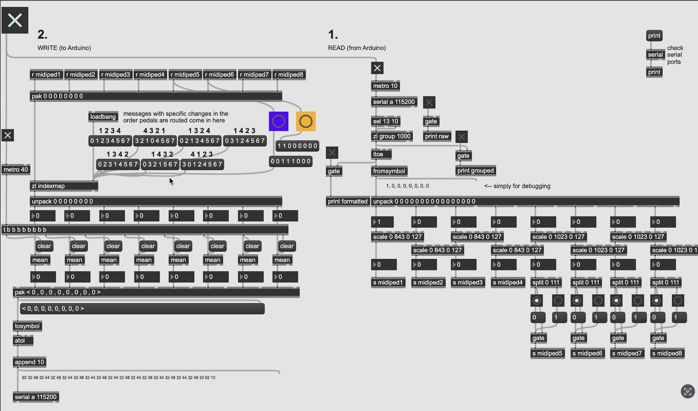
finished pedal hub
the last step missing was then to 3D design and print chassis for each motor that would be attached to a knob on each analog guitar pedal; here is the autocad 3D design before printing:
aaaand... ✨THE FINISHED SETUP!✨
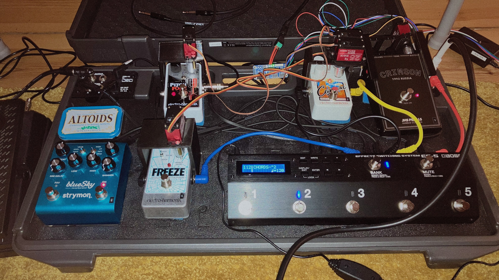
✨✨✨
+++
OLDER PROJECTS
made my own passive studio monitors in the summer of 2019 (thanks to parts-express in OH!)

 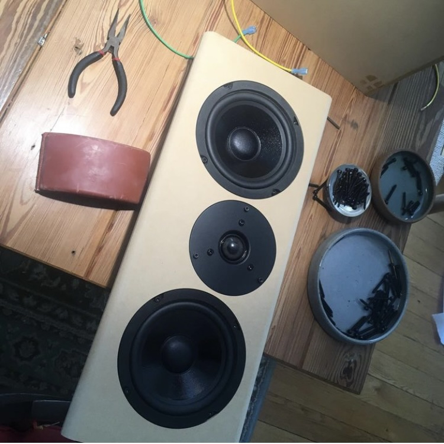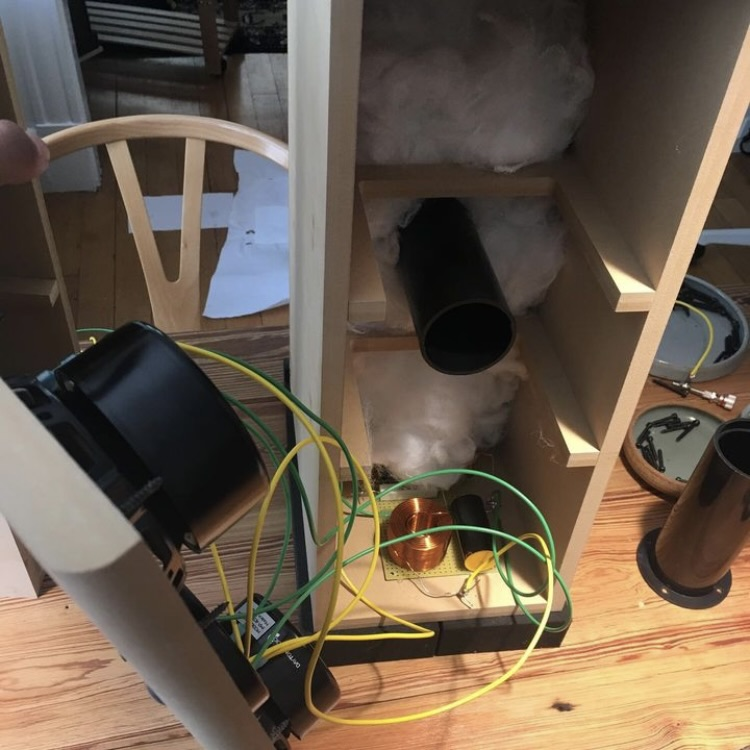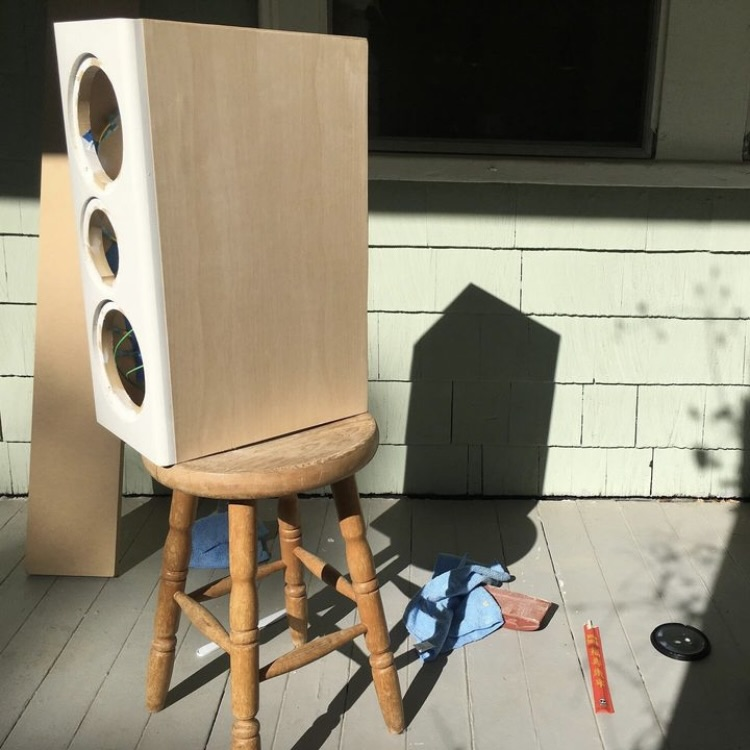
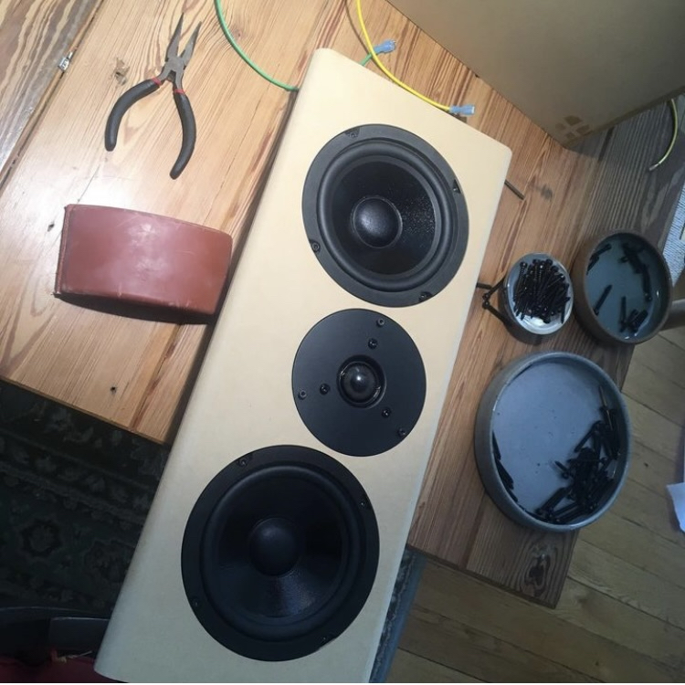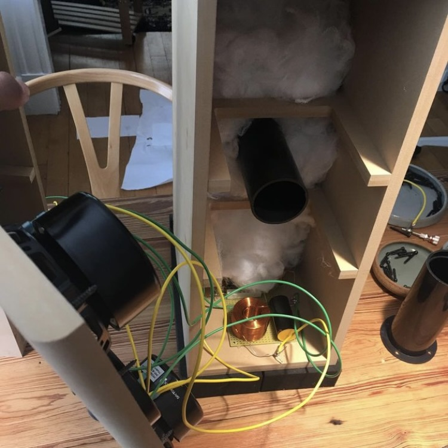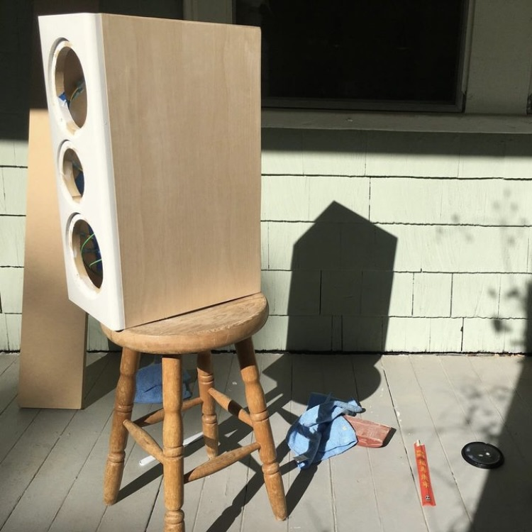
+++
these photos document the process of putting together my first "lunchbox" for 500-series format mic preamps in early 2020, from CAPI gear
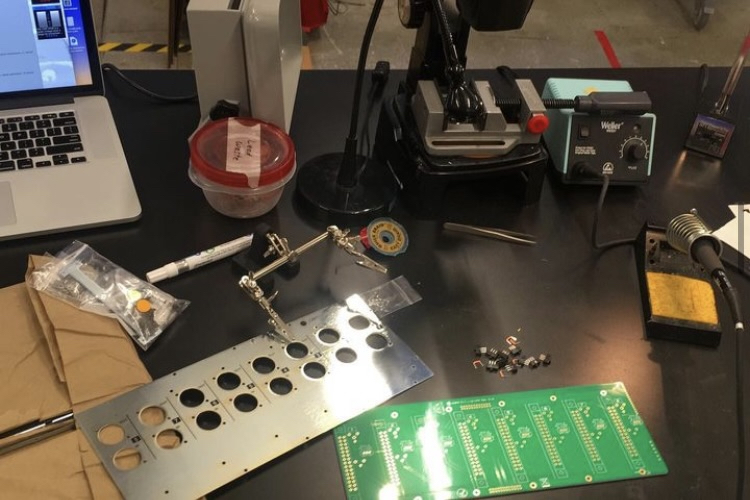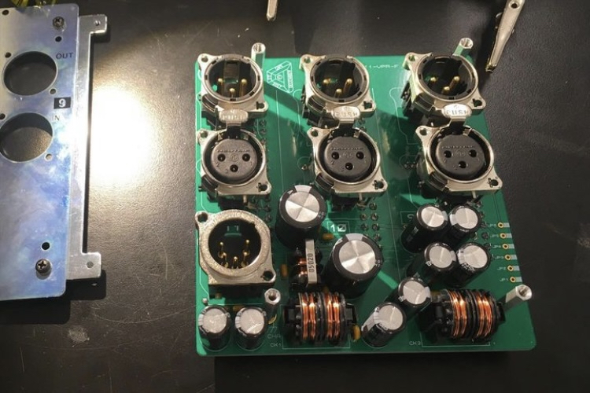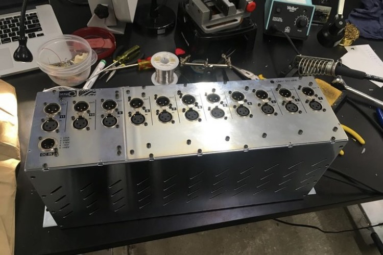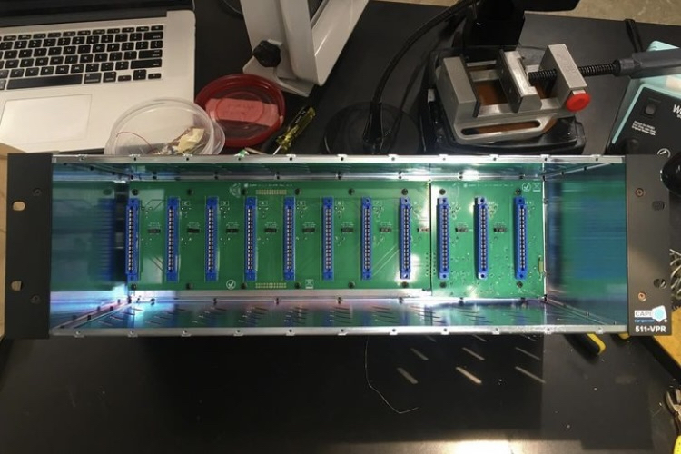
+++
and this was my first preamp, from DIYRE

 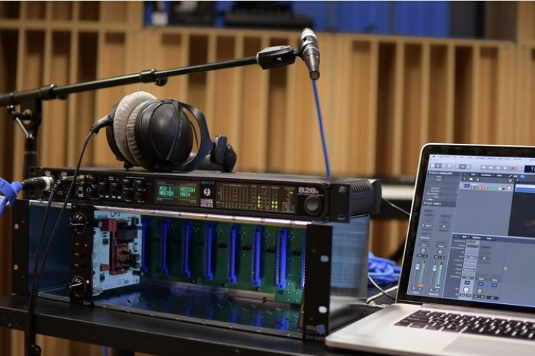
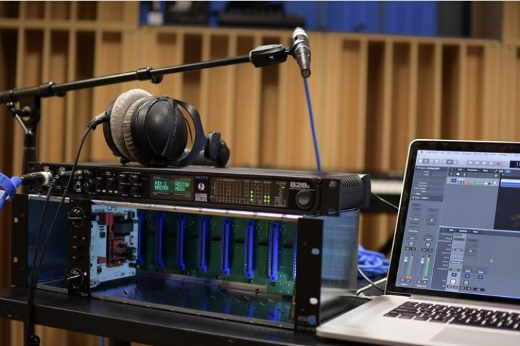
+++
also built my own guitar pedal
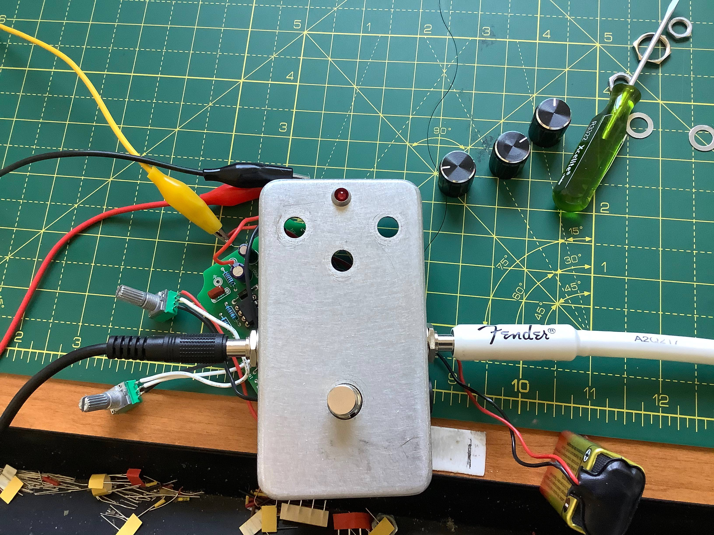
---
the pandemic interrupted this process a bit, but my third and fourth preamps are finally coming together right now
two Baby Animal 500 from JLM Audio Australia
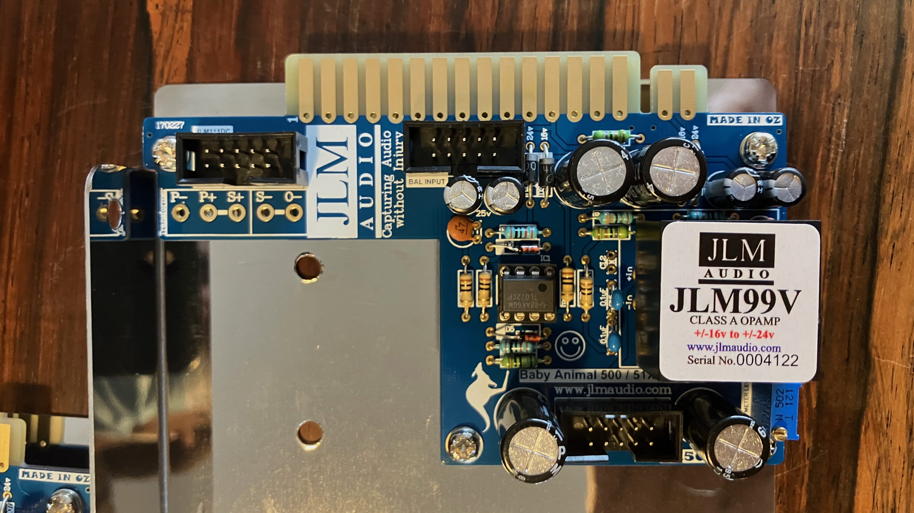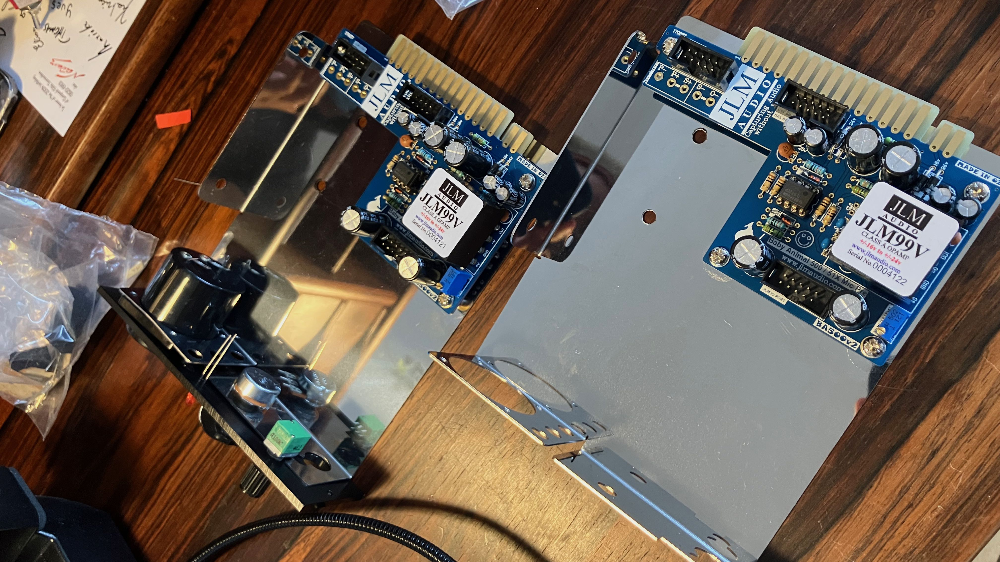
---
My goal currently is to complete my lunchbox with six more DIY 500-series preamps and use this expanded setup to continue recording my own music and audio projects, as well as imparting analog sonic character to my freelance audio engineering engagements

thank you for reading!
---